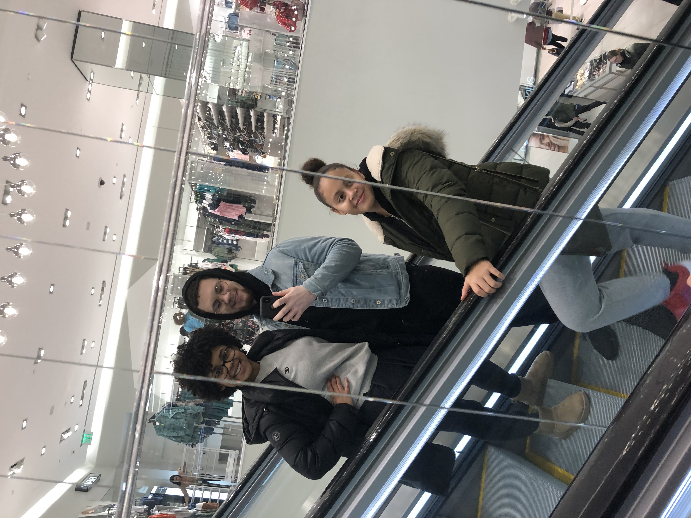

|  |
|
|---|
Hello Everypne! My name is Gabriel Torres, and I am a 21 year old Providence,
RI native. I graduated from one of the first hybrid charter schools in Rhode Island,
Village Green, top of my class. I am currently a Computer Engineering Major, also hoping
to tak on Computer Science as an additional major. My hobbies involve playing video games,
shopping, playing bass, and building and maintaining PCs. I get super excited when I learn
something I didn't know before and I think thats why I'm so drawn to technology in general,
as it is a medium that allows limitless possibilities for those in the driver seat. Finally,
my favorite color is royal blue, I LOVE any kind of pasta, and I love watching movies!
(80s and 90s coming of age movies are what I grew up on).